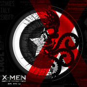
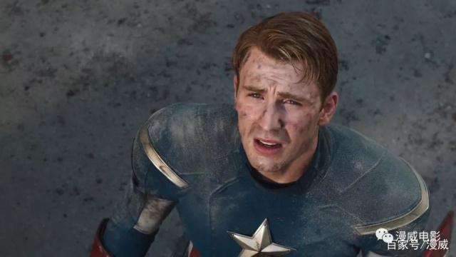
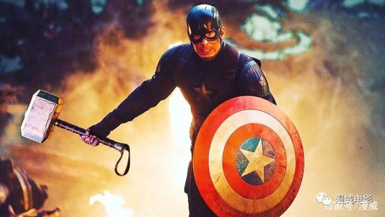

百度首页
登录
百度首页
登录
 漫威
美国队长克里斯·埃文斯最初曾两次婉拒出演美国队长 但最后还是参演了。“在扮演一个对我来说意义重大的角色之后继续向前迈进，我认为任何一个演员，即使我一开始就扮演这个角色，好吧，我可能会被这个角色定义了？”CE在参加ACE漫展时说道。 “但在某种程度上来说，在过去十年间，你不禁会接受这样一个事实：当你走在街上时，每个人都喜欢，'队长！'

尽管漫威这样的长期合约曾让CE有些焦虑，因为这样很可能会将一个演员局限在这个角色中。 “但实际情况是，漫威制作了一系列电影。如果我不是这些电影的一部分，如果我对这些电影最终说了不，那将是我生命中最大的错误”，他说道。
“我认为这些电影对我来说非常特别。这是令人难以置信的珍藏，而这些也永远不会再发生。我觉得很幸运与特别的演员，以及导演编剧一起工作。这对我来说太特别了。”

“在我生命中的某个时刻，我真的很担心[出演美国队长]。但回想起来，我可以完全肯定地说，这是我做过最好的决定。”CE还表示，即使这些电影糟透了，他的职业生涯也因此而陷入困境，但和这些白痴[一同出席漫展的还有“鹰眼”杰瑞米·雷纳和“战争机器”唐·钱德尔]成为了朋友，也超值了！
2019-7-11